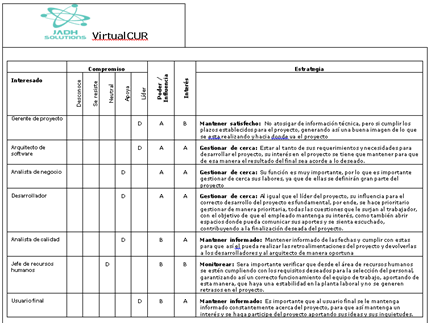
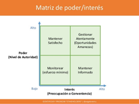
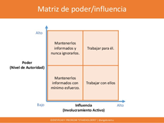
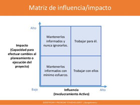

<div class="main-content">
    <div class="container-fluid">
        <div class="card">
            <div class="card-header card-header-info gray">
                <h3 class="card-title">Módulo 2: Gestión de los Interesados</h3>
                <!-- <p class="card-category">Created using Roboto Font Family</p> -->
            </div>
            <div class="card-body">
                <div id="typography">
                    <div class="card-title">
                        <h2>La identificación de los interesados</h2>
                        <div class="container">
                            <p class="justify-content">
                                La identificación de los interesados (Stakeholder: personas, grupos, organizaciones,
                                entidades, etc), es una de las primeras actividades que se realiza para la gestión de un
                                proyecto y tiene una gran importancia dado su capacidad de impacto sobre el mismo.
                                Es imprescindible que todas las partes interesadas se identifiquen independientemente de
                                cuan presente están, su interés, su participación, su nivel de poder y capacidad de
                                influencia, esto se debe, a que se permitan el apoyo de estos interesados del proyecto,
                                gestionar su participación y compromiso con el mismo. Si se omite a un interesado hay
                                probabilidad de que pueda llegar a ser evidente en algún momento durante el proyecto e
                                introduzca retrasos u otros obstáculos para el éxito del proyecto.
                            </p>
                            <p class="text-center">
                                
                            </p>
                            <p class="justify-content">
                                Toda esta información sobre los interesados del proyecto se debe concentrar en un
                                documento (Registro de interesados) para su fácil práctica consulta. La gestión eficaz
                                de los
                                interesados del proyecto parte de la oportuna identificación y mantenimiento de un
                                registro de los mismos, para lo cual el Gerente de proyectos cuenta con un instrumento
                                que se
                                denomina registro de los interesados.

                                En él se documenta información sobre los datos de contacto de cada uno de los
                                interesados, sus requerimientos, expectativas, evaluación de su grado de influencia,
                                interés y
                                postura (a favor o contraria) entre otros aspectos. Aquí les compartimos una plantilla
                                que puede
                                guiar en el levantamiento y mantenimiento del registro de interesados.
                            </p>
                        </div>
                        <h3><b>Identificación de los interesados</b></h3>
                        <div class="container">
                            <p class="justify-content">
                                El registro de interesados pertenece al conjunto de documentos del proyecto que suelen
                                actualizarse a lo largo del proyecto, y en este caso, es el resultado identificar y
                                analizar a los interesados partiendo de fuentes como el acta de constitución del
                                proyecto, los documentos de las adquisiciones de la organización y cualquier otra fuente
                                que permita identificar a los interesados.
                            </p>
                            <h4><b>Premisas en el análisis de los interesados</b></h4>
                            <ul class="justify-content">
                                <li>Identificar todos los interesados potenciales del proyecto con su información
                                    relevante.</li>
                                <li>Analizar el impacto o apoyo potencial que podría generar los actores sobre el
                                    proyecto y clasificarlos para definir una estrategia inicial.</li>
                                <li>Evaluar sus reacciones o respuestas a diferentes situaciones con el fin de
                                    planificar como influir para mejorar su apoyo y mitigar los impactos negativos
                                    potenciales.</li>
                            </ul>
                            <h4><b>Herramientas para analizar a los interesados (matriz de análisis)</b></h4>
                            <ul class="justify-content">
                                <li>Las matrices permiten ubicar gráficamente a los interesados y estudiar sus
                                    intereses, actitud, influencia e interrelación entre interesados y el proyecto.</li>
                                <li>Permite diseñar estrategias a los interesados, a través del posicionamiento
                                    cualitativo o cuantitativo de características en funciona de dos variables,
                                    obteniendo finalmente una agrupación de interesados con criterios comunes.</li>
                            </ul>
                            <h4><b>Matriz de poder/interés: </b></h4>
                            <p class="justify-content">
                                Autoridad vs nivel de preocupación
                            </p>
                            <p class="text-left">
                                
                            </p>
                            <h4><b>Matriz de poder/ influencia: </b></h4>
                            <p class="justify-content">
                                Autoridad vs participación activa
                            </p>
                            <p class="text-left">
                                
                            </p>
                            <h4><b>Matriz de influencia/impacto: </b></h4>
                            <p class="justify-content">
                                Participación activa vs Capacidad de efectuar cambios
                            </p>
                            <p class="text-left">
                                
                            </p>
                            <h4><b>¿Cómo se construye la matriz?</b></h4>
                            <ol class="justify-content">
                                <li value="1">Se establece los parámetros a evaluar en cada eje de coordenadas (Poder,
                                    interés, influencia, etc).</li>
                                <li>Se posiciona al interesado ubicándolo sobre el eje vertical la ponderación
                                    cualitativa o cuantitativa que consideres sobre la variables en cuestión (Ejemplo:
                                    Poder).</li>
                                <li>Se posiciona al interesado ubicándolo sobre el eje horizontal la ponderación sobre
                                    la segunda variable que considere. (Ejemplo: Poder).</li>
                                <li>La intersección de las dos variables establece la ubicación de interesados en la
                                    matriz, lo cual permite agruparlos y clasificarlos.</li>
                            </ol>
                        </div>
                    </div>
                </div>
            </div>
        </div>
    </div>
</div>